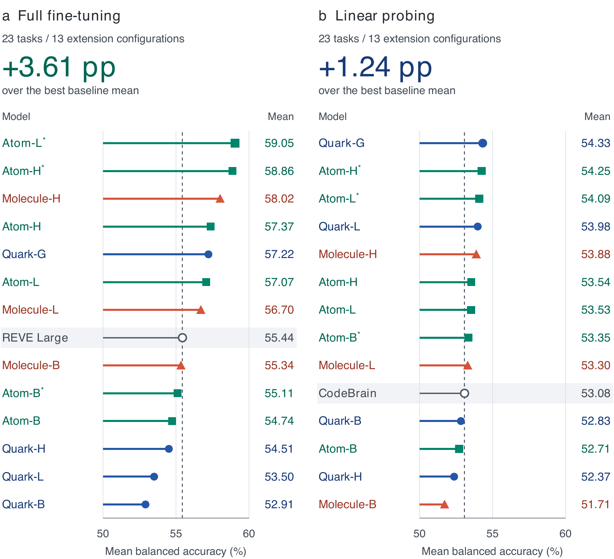

Larger encoders favor Full-FT.
Full-FT improves with encoder size within each collection. LP gains are less consistent across Base, Large, Huge and Giant.
Model scaling ↗LaBraM · EEG foundation models
Scaling Data and Models
for EEG Pretraining
Ten encoders. Up to 79,910 hours of EEG. Scaling LaBraM’s original design leads to strong transfer across 23 downstream tasks.
1 Shanghai Jiao Tong University2 Fudan University3 Microsoft Research Asia
Three pretraining collections
Hours of EEG before epoch repetition.
Mean balanced accuracy across 23 tasks. * marks the checkpoint selected by mean Full-FT performance. Evaluation protocol ↗
01 / Performance
Compare downstream performance across models, encoder sizes and pretraining durations.

LaBraM at Scale and the strongest baseline in Full-FT and LP.
Open full imageMean balanced accuracy across 23 tasks. LP uses the better pooled or no-pool readout for each model and task. Explore every model and task ↓
02 / Benchmark
Compare mean balanced accuracy and average task rank across 32 Full-FT configurations and 29 pretrained LP configurations.
Highest mean Full-FT performance.
| Rank | Model | Mean performance (%) |
|---|
Default models use the last evaluated full-data checkpoint; Atom* models use the checkpoint with the highest mean Full-FT score. Training uses at most 40 windows per subject–class pair. Hyperparameters are selected using seed-42 test results. LP uses the better pooled or no-pool three-seed test mean for each model and task.
Validation selects the checkpoint within each downstream fit. The same hyperparameters are used for seeds 10 and 5. SleepEDF uses pooled LP, and LP ties prefer pooled features. Lower average task ranks are better; tied results share their average rank.
The report provides the full evaluation settings, pretraining overlap analysis and shared-Qwen3 experiments.
03 / Complete results
All 23 tasks, with each model’s three-seed balanced accuracy. Compare individual tasks alongside the overall mean and average task rank.
No models match this name. Clear the search to show all models.
Best marks the leading value in each column, including ties. Click a column heading to sort. Mean and Avg. rank cover all 23 tasks, even when a task group is selected.
Task scores are mean balanced accuracy (%) over seeds 42, 10 and 5; ± SD shows their sample standard deviation. LP uses the better pooled or no-pool result per model and task; SleepEDF uses pooled features. Evaluation protocol ↗
04 / Findings
Larger encoders help Full-FT more consistently than LP. More data and lower pretraining loss do not always improve downstream scores.
Full-FT improves with encoder size within each collection. LP gains are less consistent across Base, Large, Huge and Giant.
Model scaling ↗Fraction sweeps suggest a saturation region. An exploratory fit places the peak near 22,000 hours for Base and 40,000 hours for Large.
Duration and saturation ↗Full-FT and LP can decline as pretraining loss falls. Downstream evaluation is needed to choose a useful training duration and checkpoint.
Training trajectories ↗No-pool probes retain patch structure and outperform average pooling in the matched readout comparison.
Pooled and no-pool LP ↗A higher LP score does not imply a higher Full-FT score. Fine-tuning reaches a higher performance ceiling in the overall comparison.
FT–LP ranking comparison ↗Shared EEG–Qwen3 classification benefits from more EEG pretraining data and larger encoders. Increasing LLM size alone gives no consistent improvement.
Multitask results ↗05 / The model families
Ten encoders span 5.8M to 1.97B parameters. Filter by pretraining collection.
| Model | Parameters | Pretraining hours | Full-FT | LP | Weights |
|---|
Full-FT and LP report mean balanced accuracy (%). Weights and metadata are available on Hugging Face.
06 / Training
Different electrode layouts require compatible batches and controlled window lengths. Sharded loading and distributed training let us train larger encoders on the expanded collections.
The technical changesStandardize signals, preserve electrode identity and set window lengths to fit the token budget.
Group recordings by electrode layout and track valid samples in each window.
Read sharded data through node-local caches and train with distributed computation and mixed precision.
Continue the research
Read the report, run the training and evaluation code, or download pretrained models.
Methods, pretraining sources and complete evaluation results.
Pretraining, fine-tuning, linear probing and EEG–Qwen3.
Quark, Atom and Molecule checkpoints and metadata.